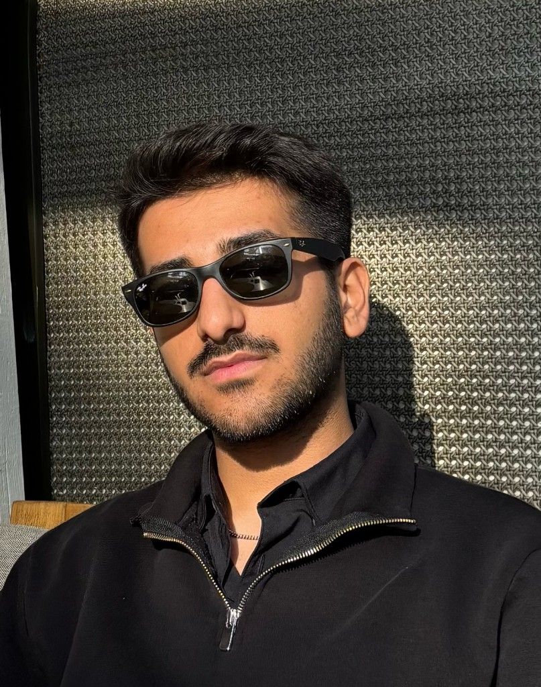

Resul Kılınç
Applied ML · Bilgisayar Mühendisliği
Uygulamalı makine öğrenmesi ve ölçeklenebilir yazılım mimarileri odağında uçtan uca sistemler tasarlıyorum. Karmaşık problemleri veri odaklı yaklaşımla analiz eder, teknik çözümü iş hedefiyle hizalarım. Net iletişim, öngörülebilir teslimat ve sürdürülebilir kod kalitesi çalışma standardım. Akademik temelli disiplini üretim gerçekleriyle birleştiriyorum.
Bu sayfa hızlı bir genel bakış sunar. Deneyimler, projeler ve teknik derinlik hakkında kapsamlı bilgi için tam portföy sayfasını incelemeniz önerilir.
Yerel asistan ReK AI ile içerik bazlı sorularını burada da yanıtlayabilirsin.